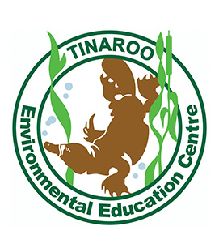

Affiliates and Contributors
Toohey Forest Environmental Education Centre would like to sincerely thank the follow for their assistance with the development of the Freshwater Macro Invertebrates App. If you want to find out further information about each of the contributors, please tap on their logos to visit their website.


- 